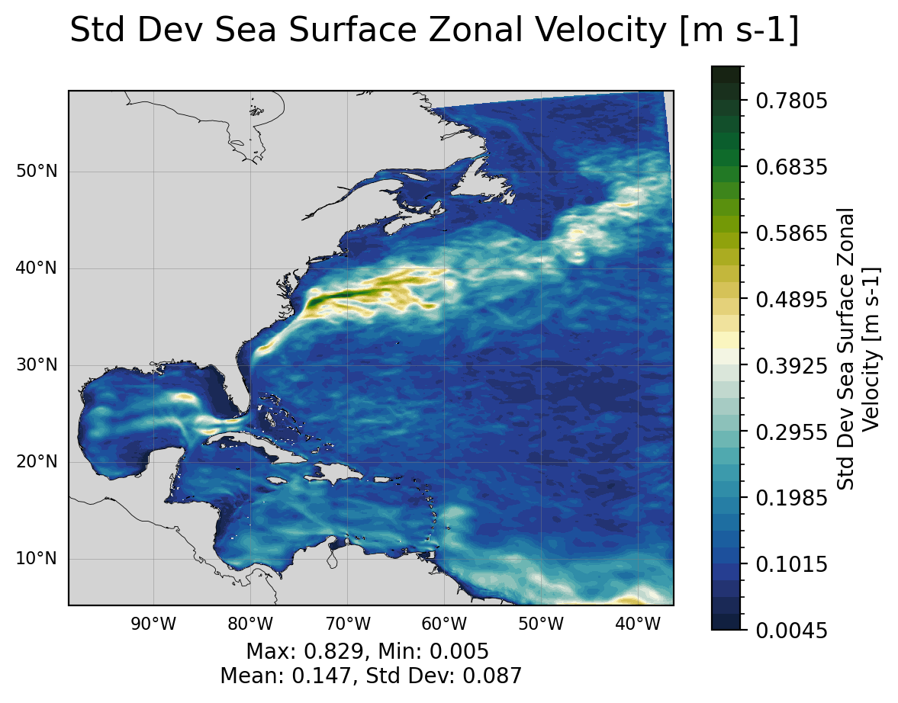
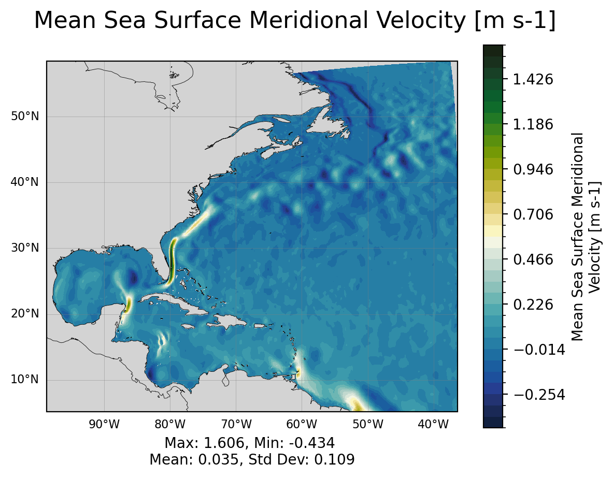
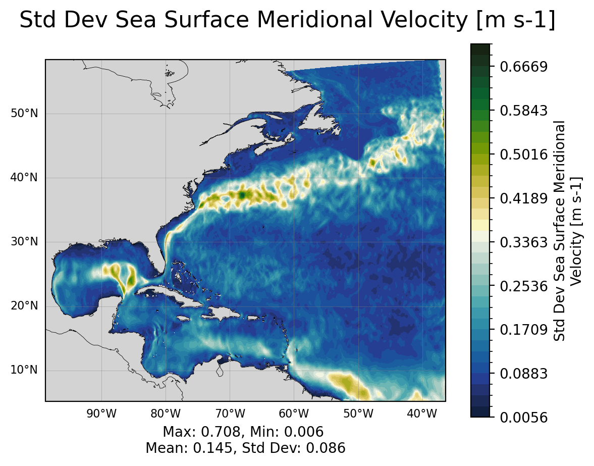
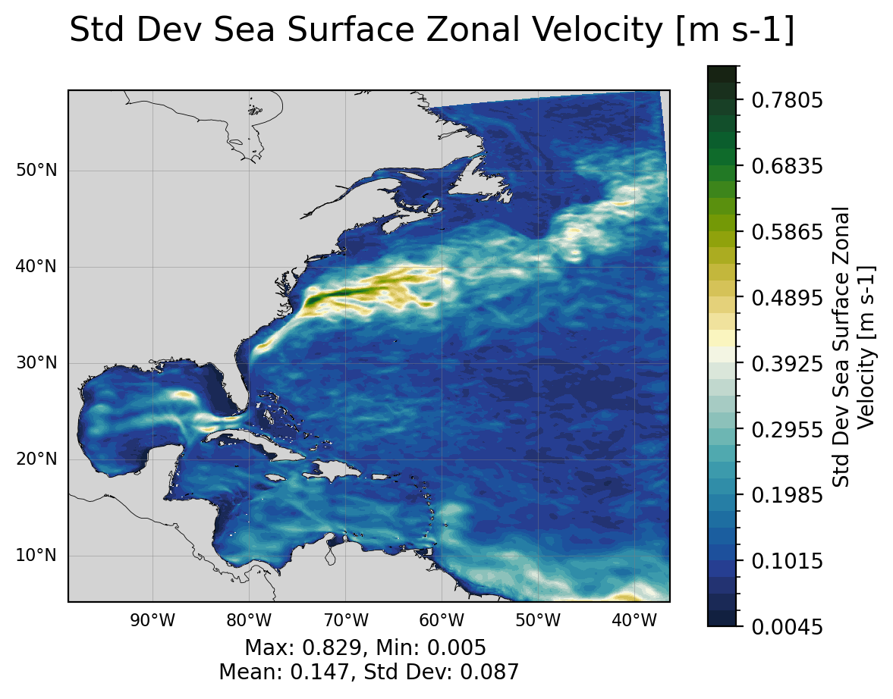
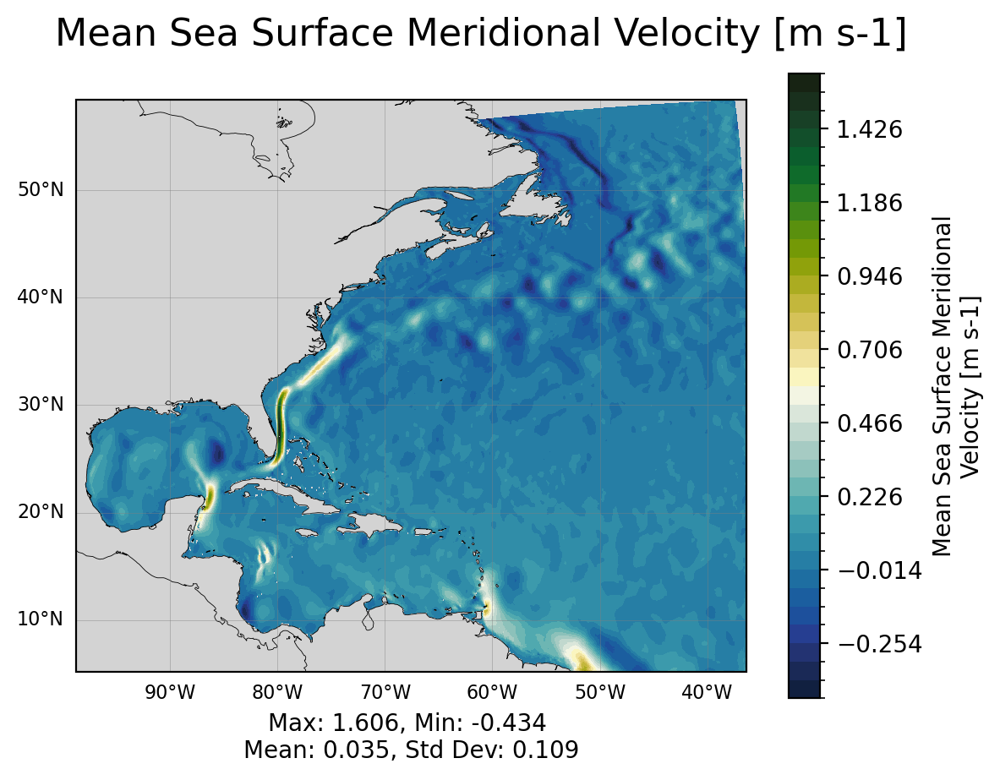
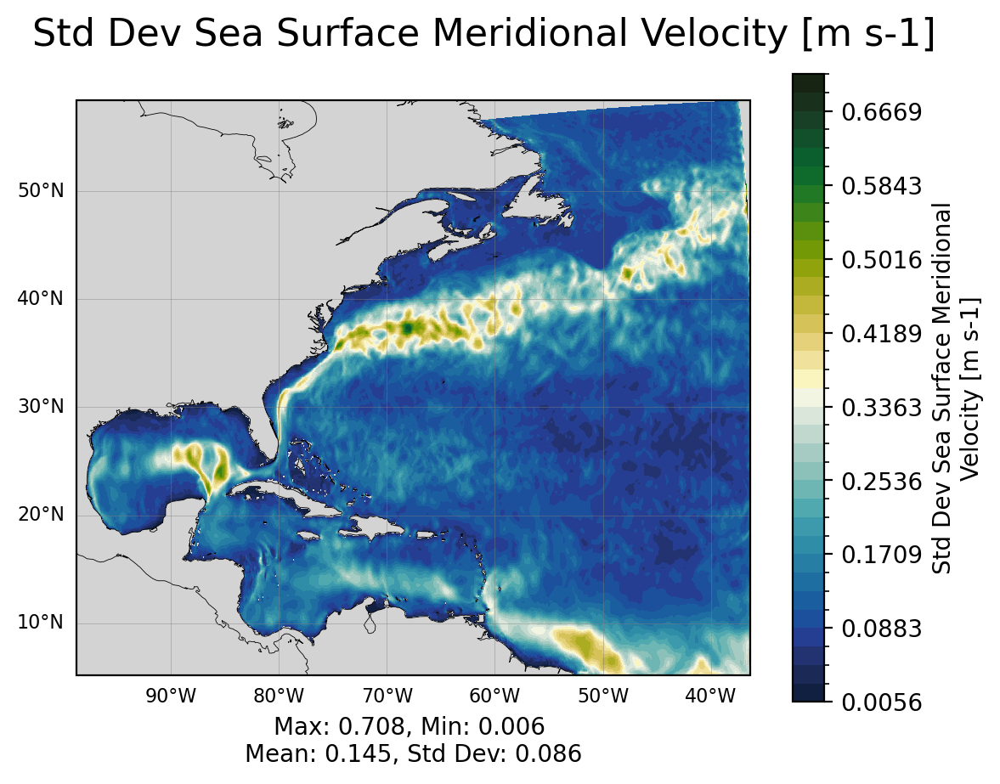

Regional Ocean: Basic Region and Surface Field Visualization#
Note: This notebook is meant to be run with the cupid-analysis kernel (see CUPiD Installation). This notebook is often run by default as part of CESM post-processing steps, but you can also run it manually.
# Parameters
case_name = "CROCODILE_tutorial_nwa12_MARBL"
base_case_name = None
CESM_output_dir = (
"/glade/campaign/cgd/oce/projects/CROCODILE/workshops/2025/Diagnostics/CESM_Output/"
)
start_date = "2000-01-01"
end_date = "2000-11-01"
base_start_date = ""
base_end_date = ""
lc_kwargs = {"threads_per_worker": 1}
savefigs = True
fig_output_dir = None
serial = True
subset_kwargs = {}
product = "/glade/work/ajanney/CUPiD/examples/regional_ocean/computed_notebooks//ocn/Regional_Ocean_Report_Card.ipynb"
Output directory is: /glade/campaign/cgd/oce/projects/CROCODILE/workshops/2025/Diagnostics/CESM_Output/CROCODILE_tutorial_nwa12_MARBL/ocn/hist
Load in Model Output and Look at Variables/Meta Data#
Default File Structure in MOM6#
This file structure will be different if you modify the diag_table.
static data: contains horizontal grid, vertical grid, land/sea mask, bathymetry, lat/lon information
sfc data: daily output of 2D surface fields (salinity, temp, SSH, velocities)
monthly data: averaged monthly output of the full 3D domain, regridded to a predefined grid (MOM6 default is WOA, see more below)
native data: averaged monthly output of ocean state and atmospheric fluxes on the native MOM6 grid
Image output directory is: /glade/derecho/scratch/ajanney/archive/CROCODILE_tutorial_nwa12_MARBL/ocn/cupid_images
Applying time range from start_date: 2000-01-01 00:00:00 and end_date: 2000-11-01 00:00:00.
Surface Data Time Bounds: 2000-01-01 12:00:00 to 2000-10-31 12:00:00
Monthly Data Time Bounds: 2000-01-14 12:00:00 to 2000-10-14 12:00:00
*mom6.h.static*.nc: static information about the domain#
The MOM6 grid uses an Arakawa C grid which staggers velocities and tracers (temp, salinity, SSH, etc.). See this MOM6 documentation for more information.
Some variables of interest:#
geolon/geolat(and c/u/v variants): specifies the true lat/lon of each cell. We use these variables for plotting and placing the data geographically.wet(and c/u/v variants): the land-sea mask that specifies if a given point is on land or sea.areacello(and bu,cu,cv variants): area of grid cell (important for taking area-weighted averages)deptho: depth of ocean floor - bathymetry
<xarray.Dataset> Size: 46MB
Dimensions: (yh: 780, xh: 740, yq: 781, xq: 741, time: 1)
Coordinates:
* xh (xh) float64 6kB -97.96 -97.88 -97.79 ... -36.54 -36.46 -36.38
* yh (yh) float64 6kB 5.243 5.326 5.409 5.492 ... 53.82 53.86 53.89
* time (time) object 8B 0001-01-01 00:00:00
* xq (xq) float64 6kB -98.0 -97.92 -97.83 ... -36.5 -36.42 -36.33
* yq (yq) float64 6kB 5.201 5.284 5.367 5.45 ... 53.84 53.87 53.91
Data variables: (12/20)
geolon (yh, xh) float32 2MB dask.array<chunksize=(780, 740), meta=np.ndarray>
geolat (yh, xh) float32 2MB dask.array<chunksize=(780, 740), meta=np.ndarray>
geolon_c (yq, xq) float32 2MB dask.array<chunksize=(781, 741), meta=np.ndarray>
geolat_c (yq, xq) float32 2MB dask.array<chunksize=(781, 741), meta=np.ndarray>
geolon_u (yh, xq) float32 2MB dask.array<chunksize=(780, 741), meta=np.ndarray>
geolat_u (yh, xq) float32 2MB dask.array<chunksize=(780, 741), meta=np.ndarray>
... ...
areacello (yh, xh) float32 2MB dask.array<chunksize=(780, 740), meta=np.ndarray>
areacello_cu (yh, xq) float32 2MB dask.array<chunksize=(780, 741), meta=np.ndarray>
areacello_cv (yq, xh) float32 2MB dask.array<chunksize=(781, 740), meta=np.ndarray>
areacello_bu (yq, xq) float32 2MB dask.array<chunksize=(781, 741), meta=np.ndarray>
sin_rot (yh, xh) float32 2MB dask.array<chunksize=(780, 740), meta=np.ndarray>
cos_rot (yh, xh) float32 2MB dask.array<chunksize=(780, 740), meta=np.ndarray>
Attributes:
NumFilesInSet: 1
title: MOM6 diagnostic fields table for CESM case: marbl.bio.croc.5
grid_type: regular
grid_tile: N/AWhen accessing the output, we need to pay particular attention to which variables we are accessing and which coordinates correspond to their position on the grid. This also affects plotting and spatial averages (as we will see in this notebook and others).
xh/yh: index the center of the cell inxandyrespectivelyxq/yq: index the corner of the cell inxandyrespectively
Coordinates:
(
xh,yh): center of cell, where tracers are. Plot withgeolon,geolat.(
xh,yq): middle of horizontal interface, where meridional (v) velocity is. Plot withgeolon_v,geolat_v.(
xq,yh): middle of vertical interface, where zonal (u) velocity is. Plot withgeolon_u,geolat_u.(
xq,yq): corners between cells, where vorticity is.
*h.sfc*.nc: daily surface fields#
The surface fields are especially useful for diagnosing short runs. This is not only the most dynamic field for short runs, but it also is the only file that stores daily results (by default). A lot of the diagnostics in this notebook use surface fields because we are able to take time averages and look at time series for any run longer than a couple of days (unlike the full 3D domain fields which are averaged over each month).
Some variables of interest:#
SSH: sea surface heighttos: temperature of ocean surfacesos: salinity of ocean surfacespeed: magnitude of speed (considered a tracer, at the center of a cell)SSUandSSV: zonal and meridional velocity at the surface
<xarray.Dataset> Size: 8GB
Dimensions: (time: 305, yh: 780, xh: 740, xq: 741, yq: 781, nbnd: 2)
Coordinates:
* xh (xh) float64 6kB -97.96 -97.88 -97.79 ... -36.54 -36.46 -36.38
* yh (yh) float64 6kB 5.243 5.326 5.409 5.492 ... 53.82 53.86 53.89
* time (time) object 2kB 2000-01-01 12:00:00 ... 2000-10-31 12:00:00
* nbnd (nbnd) float64 16B 1.0 2.0
* xq (xq) float64 6kB -98.0 -97.92 -97.83 ... -36.5 -36.42 -36.33
* yq (yq) float64 6kB 5.201 5.284 5.367 5.45 ... 53.84 53.87 53.91
Data variables: (12/16)
SSH (time, yh, xh) float32 704MB dask.array<chunksize=(29, 780, 740), meta=np.ndarray>
tos (time, yh, xh) float32 704MB dask.array<chunksize=(29, 780, 740), meta=np.ndarray>
sos (time, yh, xh) float32 704MB dask.array<chunksize=(29, 780, 740), meta=np.ndarray>
SSU (time, yh, xq) float32 705MB dask.array<chunksize=(29, 780, 741), meta=np.ndarray>
SSV (time, yq, xh) float32 705MB dask.array<chunksize=(29, 781, 740), meta=np.ndarray>
mass_wt (time, yh, xh) float32 704MB dask.array<chunksize=(29, 780, 740), meta=np.ndarray>
... ...
mlotst (time, yh, xh) float32 704MB dask.array<chunksize=(29, 780, 740), meta=np.ndarray>
oml (time, yh, xh) float32 704MB dask.array<chunksize=(29, 780, 740), meta=np.ndarray>
average_T1 (time) object 2kB dask.array<chunksize=(29,), meta=np.ndarray>
average_T2 (time) object 2kB dask.array<chunksize=(29,), meta=np.ndarray>
average_DT (time) timedelta64[ns] 2kB dask.array<chunksize=(29,), meta=np.ndarray>
time_bounds (time, nbnd) object 5kB dask.array<chunksize=(29, 2), meta=np.ndarray>
Attributes:
NumFilesInSet: 1
title: MOM6 diagnostic fields table for CESM case: marbl.bio....
associated_files: areacello: marbl.bio.croc.5.mom6.h.static.nc
grid_type: regular
grid_tile: N/A*h.z*.nc: fields for the full 3D domain, averaged monthly, regridded vertically#
These are vertically remapped diagnostics files that capture the full 3D domain, but they only output monthly averages. For runs less than a month, they will average over the full length of the run.
By default, this diagnostics MOM6 regrids output to the vertical grid from the 2009 World Ocean Atlas (35 layers down to 6750 m).
Some variables of interest:#
uoandvo: zonal and meridional velocitythetao: potential temperatureso: salinityvmoandumo: zonal and meridional mass transportvolcello: volume of each cell (important for averaging over a volume of the domain)
Note: now there are two z coordinates. z_i is the vertical interface between cells and z_l identifies the depth of the cell centers.
<xarray.Dataset> Size: 11GB
Dimensions: (time: 10, z_l: 35, yh: 780, xq: 741, yq: 781, xh: 740,
nbnd: 2, z_i: 36)
Coordinates:
* xq (xq) float64 6kB -98.0 -97.92 -97.83 ... -36.5 -36.42 -36.33
* yh (yh) float64 6kB 5.243 5.326 5.409 5.492 ... 53.82 53.86 53.89
* z_l (z_l) float64 280B 2.5 10.0 20.0 32.5 ... 5.5e+03 6e+03 6.5e+03
* z_i (z_i) float64 288B 0.0 5.0 15.0 ... 5.75e+03 6.25e+03 6.75e+03
* time (time) object 80B 2000-01-14 12:00:00 ... 2000-10-14 12:00:00
* nbnd (nbnd) float64 16B 1.0 2.0
* xh (xh) float64 6kB -97.96 -97.88 -97.79 ... -36.54 -36.46 -36.38
* yq (yq) float64 6kB 5.201 5.284 5.367 5.45 ... 53.84 53.87 53.91
Data variables: (12/17)
uo (time, z_l, yh, xq) float32 809MB dask.array<chunksize=(1, 35, 780, 741), meta=np.ndarray>
vo (time, z_l, yq, xh) float32 809MB dask.array<chunksize=(1, 35, 781, 740), meta=np.ndarray>
h (time, z_l, yh, xh) float32 808MB dask.array<chunksize=(1, 35, 780, 740), meta=np.ndarray>
thetao (time, z_l, yh, xh) float32 808MB dask.array<chunksize=(1, 35, 780, 740), meta=np.ndarray>
so (time, z_l, yh, xh) float32 808MB dask.array<chunksize=(1, 35, 780, 740), meta=np.ndarray>
rhopot0 (time, z_l, yh, xh) float32 808MB dask.array<chunksize=(1, 35, 780, 740), meta=np.ndarray>
... ...
uhGM (time, z_l, yh, xq) float32 809MB dask.array<chunksize=(1, 35, 780, 741), meta=np.ndarray>
uhml (time, z_l, yh, xq) float32 809MB dask.array<chunksize=(1, 35, 780, 741), meta=np.ndarray>
average_T1 (time) object 80B dask.array<chunksize=(1,), meta=np.ndarray>
average_T2 (time) object 80B dask.array<chunksize=(1,), meta=np.ndarray>
average_DT (time) timedelta64[ns] 80B dask.array<chunksize=(1,), meta=np.ndarray>
time_bounds (time, nbnd) object 160B dask.array<chunksize=(1, 2), meta=np.ndarray>
Attributes:
NumFilesInSet: 1
title: MOM6 diagnostic fields table for CESM case: marbl.bio....
associated_files: areacello: marbl.bio.croc.5.mom6.h.static.nc
grid_type: regular
grid_tile: N/AThe output found in *mom6.h.z.*.nc files is vertically remapped by MOM6. By default, this output is on the 2009 World Ocean Atlas grid. You can regrid the output after runtime (see packages like xgcm and and xESMF), but if you know a vertical grid that you need output on, MOM6 can handle the interpolation automatically.
The vertical grid settings for a particular CESM run can be found in MOM_parameter_doc.all in the CESM case run directory. See this MOM6 documentation for more information.
*h.native*.nc: fields for the full 3D domain, averaged monthly, on native MOM6 grid.#
These outputs are on the MOM6 native grid. From the MOM6 Documentation:
Since the model can be run in arbitrary coordinates, say in hybrid-coordinate mode, then native-space diagnostics can be potentially confusing. Native diagnostics are useful when examining exactly what the model is doing
The default native file (as configured by CESM) also outputs useful global averages and atmospheric variables.
Some variables of interest:#
soga: global mean ocean salinitythetaoga: global mean ocean potential temperaturetauuoandtauvo: zonal and meridional downward stress from the atmospheric forcinghfds: net downward surface heat fluxhf*: various individual heat fluxes into the ocean
friver: freshwater flux from rivers
Look at Regional Domain#
Taking mean and std dev from 2000-01-01 12:00:00 to 2000-10-31 12:00:00
 




